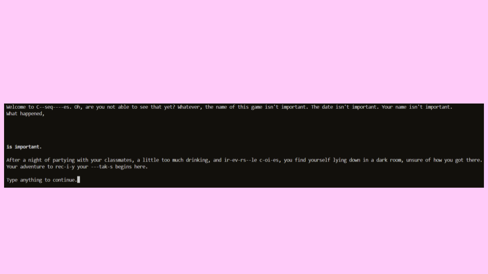

Hello, my name is Iain, although I prefer going by Lucas. This is my portfolio! I am currently a senior at Pasadena High School. I am interested in computer science, software development, and game development. I am currently looking to gain more experience in these fields. You can reach me at futurelucas123@gmail.com.
These are a few of my works:

Godot Platformer
GitHub repositoryA 2D platformer game where you jump across pits to reach the end of the level. There are stars to collect and enemies to avoid. This was built in GDScript using the Godot Engine.
C--seq----es
GitHub repositoryA text-based story game about a journey of self improvement. The user controls the main character by typing words into a terminal. This was built in Python.

Pasadena High School Club Calender
p5.js sketchCalender functionality for a website intended to be used by the clubs of Pasadena High School to post information about meetings. Input data into the boxes, and when you press submit it will be sent to an API and display on the page. This was built in HTML/CSS/Javascript, and uses a Sheetdb API.

Tic Tac Toe
p5.js sketchA simple game of Tic Tac Toe against an AI. The AI is programmed to always make the best possible move in any given situation. This was built in HTML/CSS/Javascript.